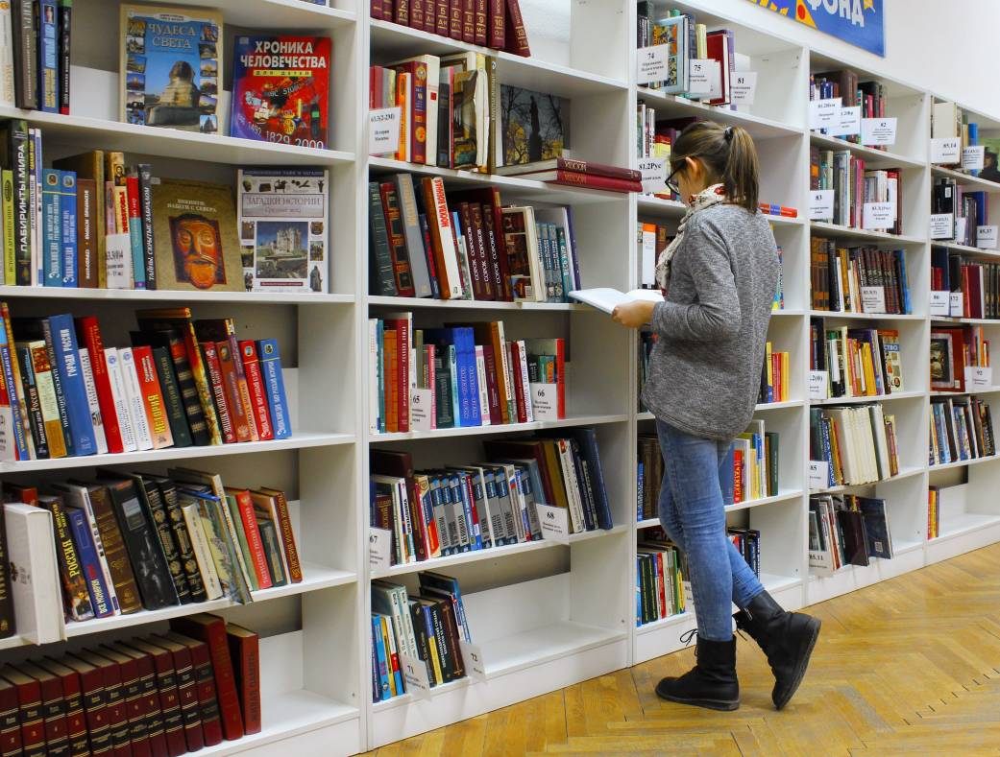
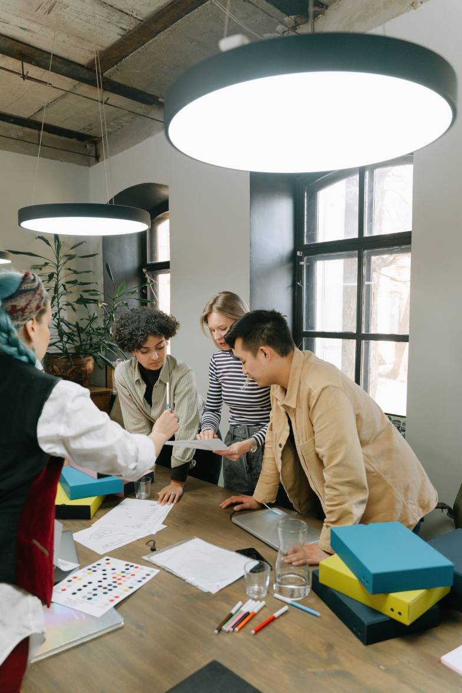

درباره ی story-shelf
جاییه برای آدمهایی که با کتابها زندگی میکنن؛ جایی که هر کتاب میتونه شروع یک داستان تازه باشه. ما اینجا تلاش کردیم فضایی صمیمی و دوستداشتنی بسازیم تا پیدا کردن کتاب موردعلاقهتون، خودش بخشی از یک تجربه لذتبخش باشه.
از انتخاب کتابها گرفته تا طراحی فضای مجموعه، همه چیز با این فکر شکل گرفته که کتاب فقط یک محصول نیست؛ بلکه میتونه همراه لحظههای خوب، یادگیریهای تازه و خاطرههای ماندگار ما باشه.


مدیر مجموعه :
پشت هر مجموعه خوب، آدمی هست که با علاقه و پشتکار مسیرش رو ساخته. مدیر Story Shelf از همان ابتدا تلاش کرده این مجموعه را با هدف ایجاد فضایی متفاوت برای کتابخوانها شکل بدهد؛ فضایی که در آن علاوه بر خرید کتاب، ارتباطی صمیمی با دنیای کتابها شکل بگیرد.
اینجا هر تصمیم با یک سؤال ساده شروع میشود: چطور میتوانیم تجربه بهتری برای کتابخوانها بسازیم؟

شیما گنجی
مدیر مجموعه استوری شلف
جایی برای کشف داستان های تازه
هر گوشه از Story Shelf با عشق به کتاب و کتابخوانی شکل گرفته است. دوست داشتیم فضایی داشته باشیم که وقتی واردش میشوید، فقط با چند قفسه کتاب روبهرو نشوید؛ بلکه حس کنید وارد دنیایی از داستانها و تجربههای تازه شدهاید.
گاهی فقط کافی است بین قفسهها قدم بزنید؛ شاید همان کتابی که مدتها دنبالش بودید، درست جلوی چشمتان باشد.


خوشحالیم که با شما همراه هستیم
Story Shelf برای ما فقط یک کتابفروشی نیست؛ مجموعهای است که با علاقه به کتابها و احترام به کتابخوانها ساخته شده.
ممنونیم که بخشی از داستان Story Shelf هستید. امیدواریم هر بار که به ما سر میزنید، با یک کتاب خوب و یک حس خوب از اینجا برگردید. 📚